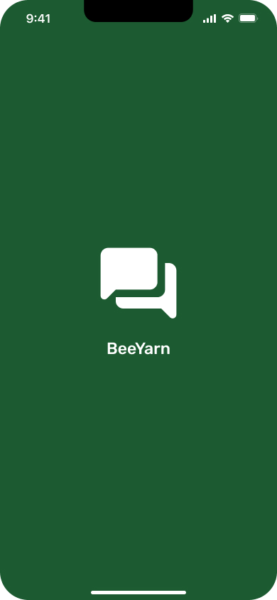
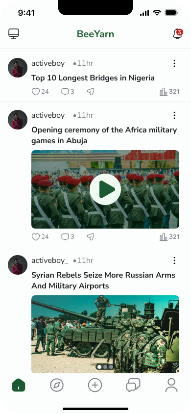
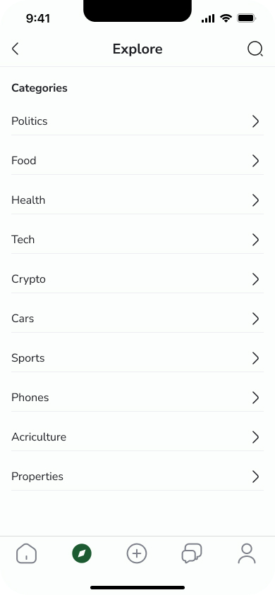
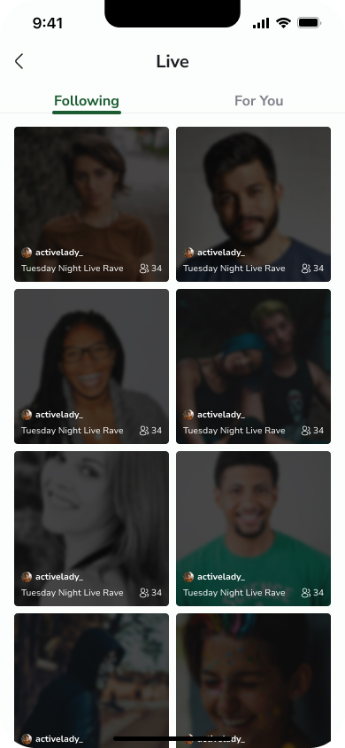

BeeYarn. Be Seen. Be Heard..
It started with a simple observation that millions of social media users share:
"We spend hours creating content, engaging with communities, watching videos, reading posts, and the platforms make billions while we get nothing."
"What if everyone got paid? Not just the influencers with millions of followers, but everyone who contributes to making a platform valuable?"
"What if a social platform actually respected our privacy, protected our data, and compensated us fairly?"
That conversation sparked a mission. Months of development, countless iterations, and an unwavering commitment to doing social media differently led to this moment.
Today, BeeYarn launches, and it's here to prove that social media can be better.
BeeYarn isn't just another platform competing for your attention. It's a fundamental rethinking of what social media should be and who it should serve.
This is the game-changer: you earn YarnPoints for every way you engage with the platform.
We're not harvesting your data to sell to advertisers. We're not tracking your every move to manipulate what you see. BeeYarn is built with privacy and security as core principles, not afterthoughts. Your data is protected, and your digital safety is our priority.
No algorithm burying your content. No paying to boost your posts. No fighting for visibility. Share your thoughts through yarns, creative posts that bring your ideas to life. Go live with real-time video. Connect with people who genuinely want to hear from you. Your voice matters here.
Dive into meaningful conversations across diverse discussion forums. Explore trending topics that matter to you. Join groups built around your passions—whether that's tech, gaming, fitness, cooking, art, entrepreneurship, or anything in between. Host live calls with like-minded individuals. Chat instantly and build real connections.
BeeYarn gives you the canvas. Share through yarns, broadcast with live video, write long-form posts, or jump into quick conversations. However you want to express yourself, the platform adapts to you, not the other way around.
For too long, social media platforms have operated on a broken model: extract as much value as possible from users, monetize their data, and reward only the top fraction of creators. Everyone else? They're just providing free labor.
BeeYarn flips that model completely.
BeeYarn was born from a vision in Africa, a continent that understands what it means to be undervalued by global platforms. We're building with infrastructure hosted in Africa, ensuring data sovereignty and keeping value where it's created. But our mission extends globally: to create a social platform that respects and rewards every user, everywhere.
Whether you're in Lagos or London, Nairobi or New York, if you're tired of being the product instead of the priority, BeeYarn is for you.
Early users are already discovering what makes BeeYarn different. Creators are earning. Readers are getting rewarded. Communities are thriving. And every interaction is protected by a platform that actually values its users.
This isn't just a launch. It's a statement about what social media can be when it's built for people, not just profit.
Download BeeYarn today. BeeYarn. Be Seen. Be Heard
Available on Google Play
Your voice deserves to be heard. Your time deserves to be valued. Your creativity deserves to be rewarded.
Welcome to BeeYarn. Welcome to social media, reimagined.
For media inquiries, partnership opportunities, or more information:
BeeYarn is a next-generation social platform that revolutionizes how users are compensated for their participation. Built on principles of fair value distribution, user privacy, and authentic community building, BeeYarn rewards all forms of engagement, from content creation to consumption. With roots in Africa and a global vision, BeeYarn combines discussion forums, real-time video, instant messaging, and live calls into one platform where every voice matters and every user benefits. The platform's tagline"Be Seen, Be Heard", reflects its commitment to giving every user genuine visibility, voice, and value.